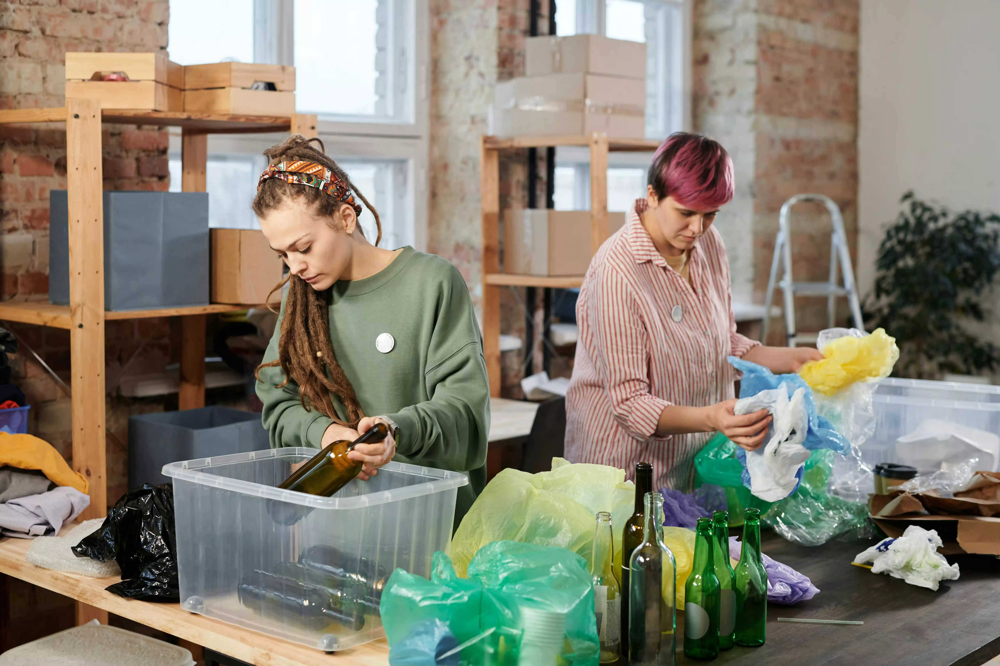
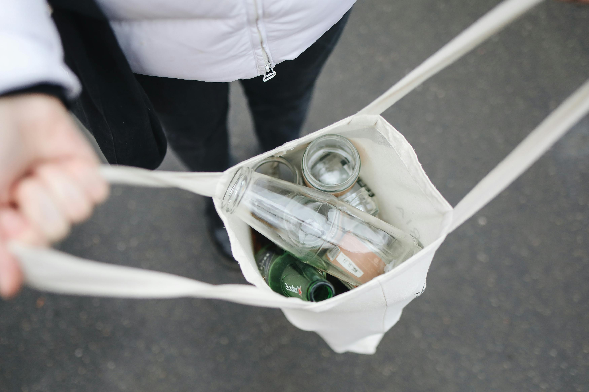

Berita Dan Acara

Sampah yang diolah dengan daur ulang merupakan langkah awal untuk menctiptakan bumi baru.
sabtu, 22 juni 2024

BumiBaru menjadi wadah untuk mengolah sampah mulai dari sekarang dan selamanya.
minggu, 23 juni 2024

Darurat sampah di Daerah Istimewa Yogyakarta menimbulkan sederet masalah.
Selasa, 8 Agustus 2023